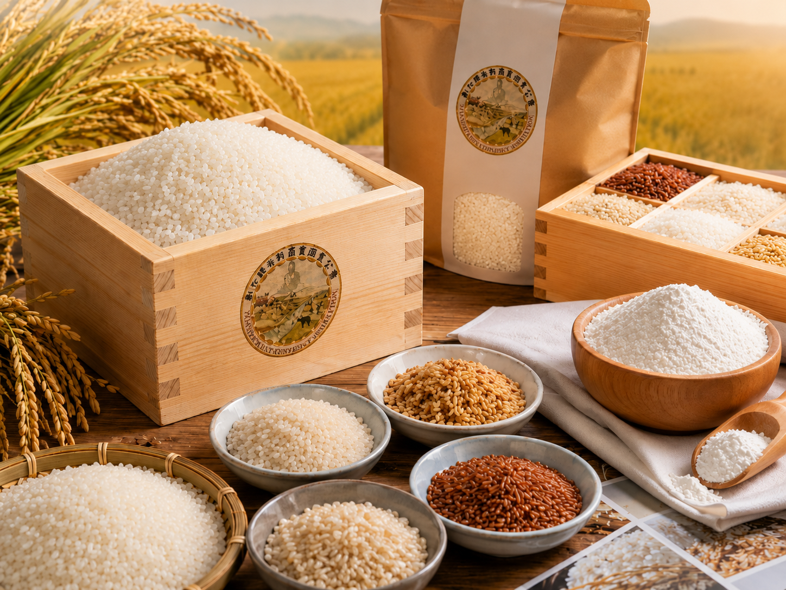
濁水溪滋養的彰化平原，孕育出台灣最優質的稻米產區之一。彰化縣米穀商業同業公會以「彰榖米」為品牌旗艦，整合在地優質米穀業者，推動品質認證、食農教育與米穀粉烘焙應用推廣。
彰化縣擁有濁水溪沖積平原的豐沃土地，七十餘年的米穀業者耕耘，形成深厚的稻米產業根基。
公會整合縣內甲乙級會員共 347 家，建立統一品質標準，以彰榖米品牌對外彰顯在地稻米的可信賴度。
從傳統白米延伸至米穀粉烘焙、食農教育與社區推廣，開創在地稻米產業的多元可能性。
彰化縣米穀商業同業公會嚴格把關每一粒白米的品質，確保從產地到消費者手中，都是最新鮮、最優質的彰化在地好米。


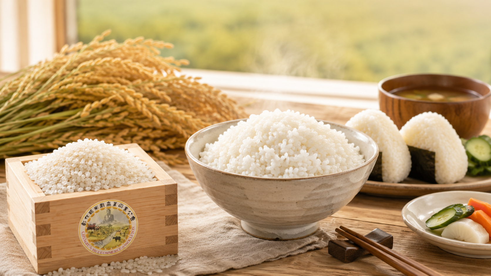
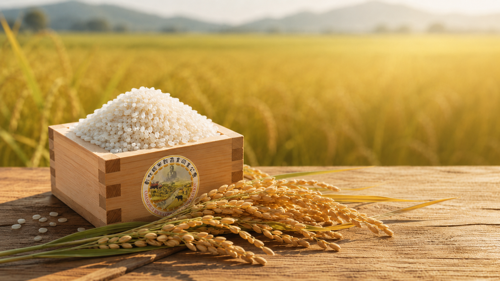
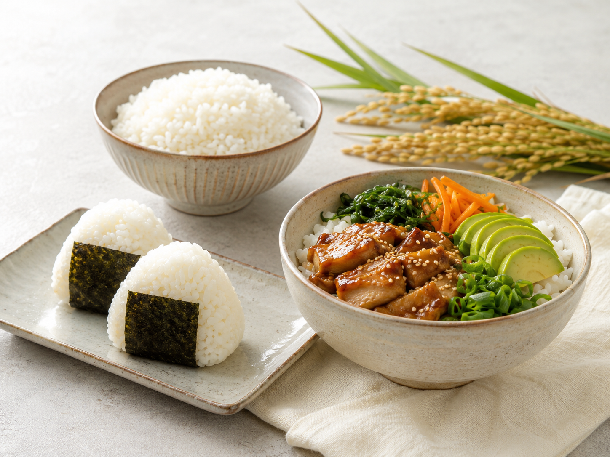
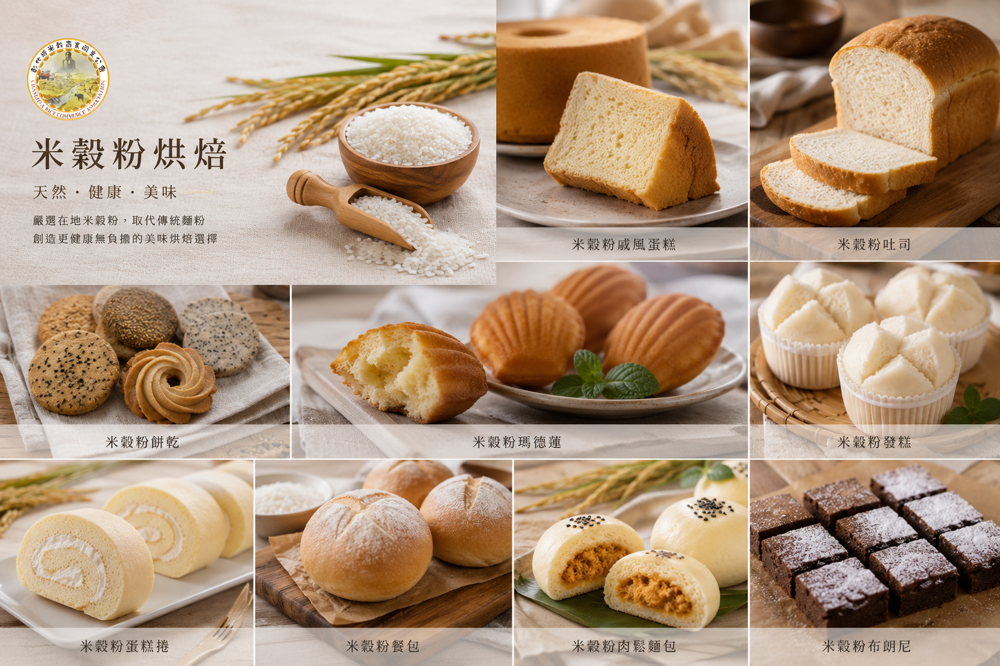
嚴選在地米穀粉，取代傳統麵粉，創造更健康無負擔的烘焙選擇。彰化縣米穀商業同業公會積極推廣米穀粉多元應用，讓台灣在地稻米走進每一個家庭廚房。
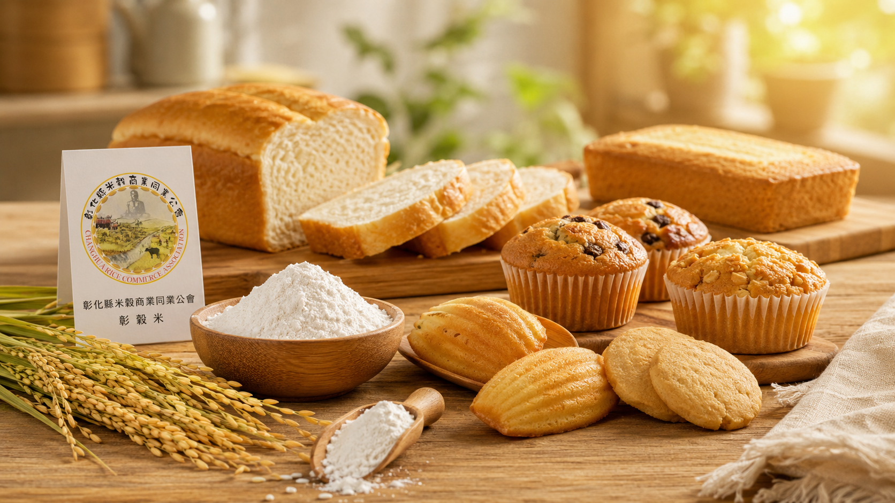
以米穀粉製作的經典烘焙品，口感蓬鬆細緻，風味自然純正。
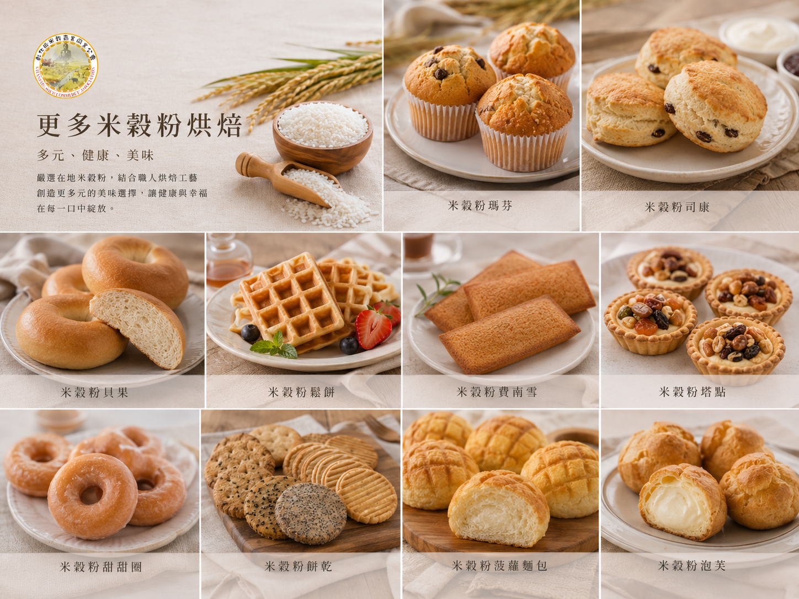
多元造型與口味選擇，展示米穀粉在不同烘焙品類的無限可能。
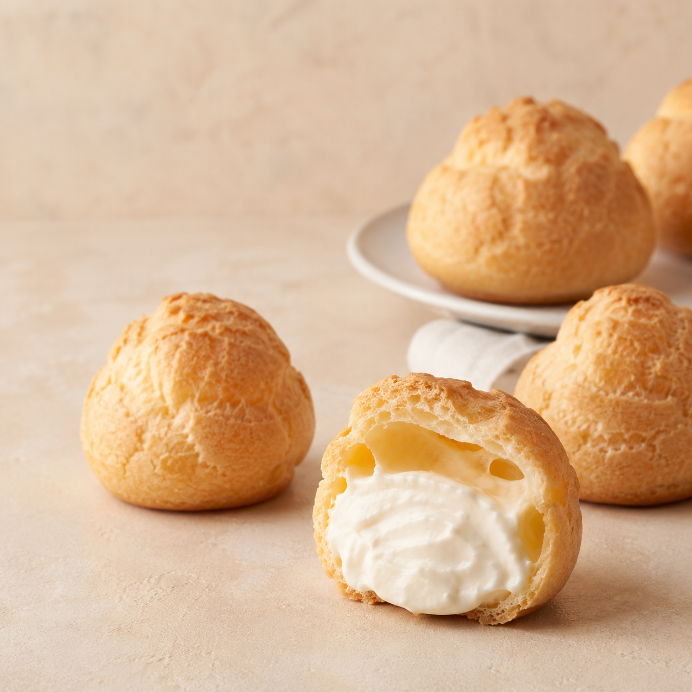
精緻下午茶點心，健康清爽，適合親子課程與社區活動推廣。
早餐與親子烘焙的最佳選擇，以在地米穀粉展現台灣米食文化。
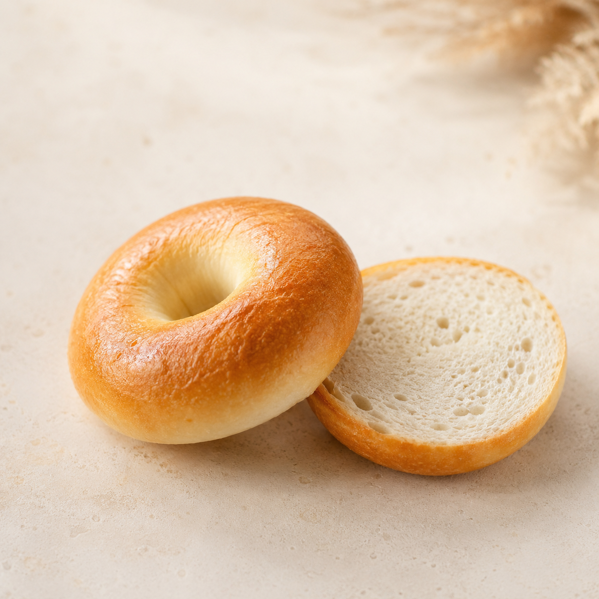
健康扎實的日常主食，以米穀粉取代小麥，口感自然純正。

彰化縣平原孕育的在地白米，嚴格品質把關，從稻田直送餐桌。
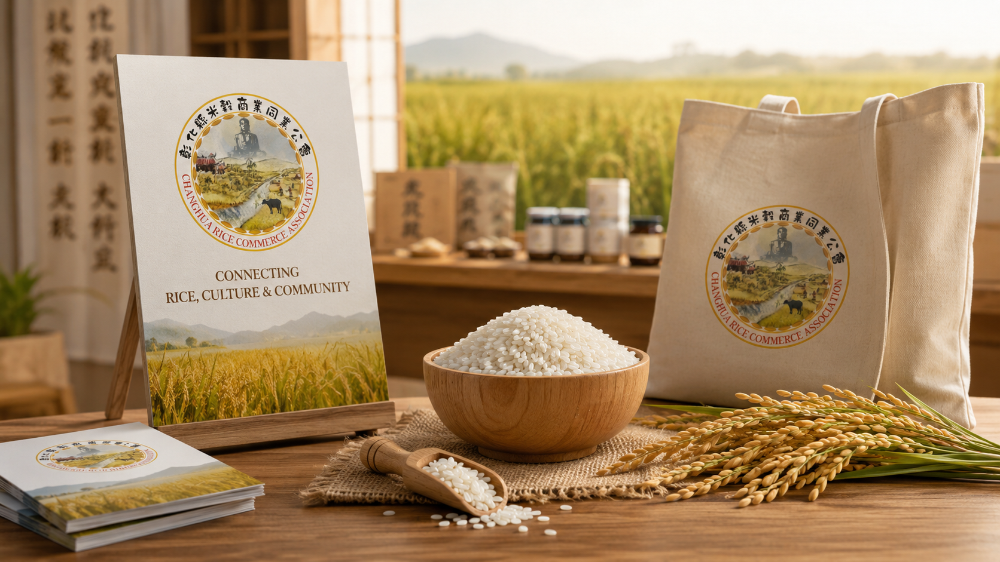
米食不只是主食，更是台灣在地文化的核心。彰化縣米穀商業同業公會積極推廣食米教育，讓每一粒彰化好米都能被認識、被珍惜。
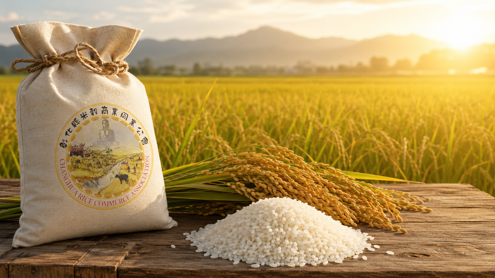
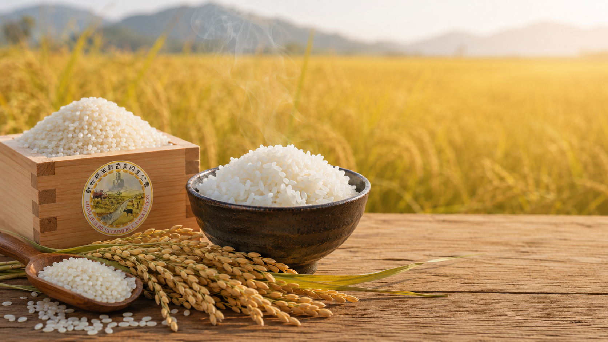